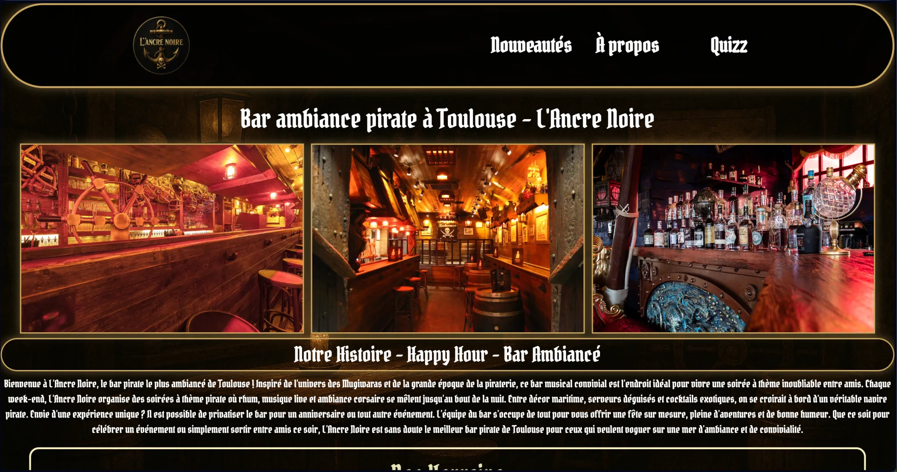
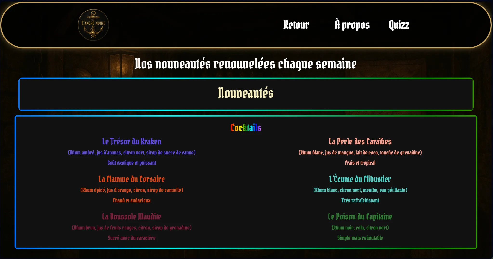
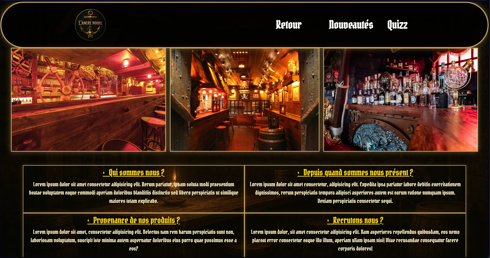

// projets/site
Bienvenue sur ma page de projet : le site web sur lequel j'ai travaillé et que j'améliore tout au long de l'année. Il m'a permis de renforcer mes compétences en HTML, CSS, JavaScript et PHP, dans un portfolio fonctionnel, esthétique et évolutif.

Page d'accueil de mon site pour L'Ancre Noire, un bar à ambiance pirate à Toulouse. Charte graphique sombre et dorée, typographie inspirée de la piraterie, mettant en valeur l'intérieur du bar et sa sélection de boissons. Réalisé en HTML, CSS, JavaScript et PHP.

Cette page présente les nouveautés du bar : une sélection de cocktails à thème pirate, chacun avec ses ingrédients et son ambiance propre, mise à jour régulièrement.

Une galerie qui met en avant l'ambiance du bar : décor, éclairage et objets à thème pirate, pour donner un aperçu de l'expérience sur place.
Fais glisser le curseur pour constater l'entiereté de la page quizz.
Retrouvez mes Compte Rendus ci-dessous pour chaque thème du site :